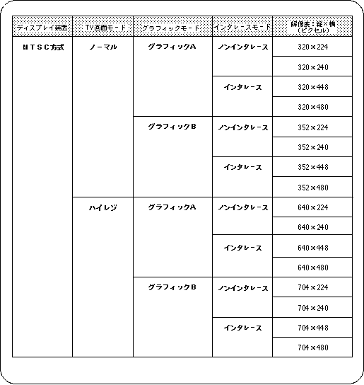
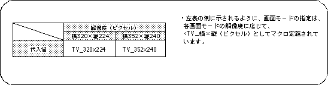
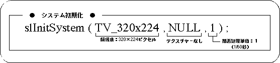

Return to previous page | Return to menu | Go to next page
The screen mode is for determining the screen resolution, screen size, display device, etc. Sega Saturn supports a variety of screen modes, but SGL uses and supports the following 16 screen modes.

Note) The default value of screen mode is 320 x 224 mode.
For details on the screen mode, refer to “HARDWARE MANUAL vol.2: VDP2 User's Manual”.
In SGL, use the library function “slInitSystem” to initialize scrolling and set the screen mode.
This function “slInitSystem” performs initialization and initial settings other than scrolling. For details, refer to the default list at the end of the “Function Reference” volume in the Reference Manual.

Note) The values in the above table are defined in “sl_def.h”.

The setting of the drawing processing unit in the parameter means the time interval for rewriting the image.
For SGL, 1/60 seconds can be set for non-interlace and 1/30 seconds for double-dense interlace can be set in the range of 1 to 127.
The longer the rewrite interval, the more computation processing can be performed, but the drawing interval is long, so when you draw consecutive images, it looks awkward.
Conversely, if the rewrite interval is short, smooth images can be realized, but the amount of computation that can be processed at one time is reduced.